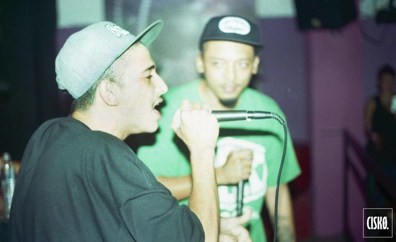

Historia
Doble Porción de rimas, de vivencias. Dos maneras de vivir y narrar la calle. Una amistad de acero, a prueba de malas rachas, que se desembocó en canciones. Métricas Frías usa su voz suave y melódica, Mañas Ru-Fino, en cambio, raspa los oídos como lija con su voz carraspoza. Juntos son los dueños de un rap nostálgico, introspectivo y con mucho sabor a calle. La banda sonora de una caminata nocturna.

Tres años después de su primer disco juntos -El Abrebocas (2012)- y dos discos más de cada uno en solitario –El rap de la montaña (2014), de Mañas, y -Serenata sin mariachis (2015), de Métricas Frías– esperan lanzar a finales de este año su segundo disco como duo. Allí, además de los viejos conocidos de Moebiuz, aparecerán nuevos invitados con propuestas de sonidos que, sumados a una narrativa que ha crecido y se ha consolidado con el paso de los años, promete dar mucho más que un 'abre bocas'.

¿Cómo se conocieron ustedes?
Mañas: como en el 2011
Métricas Frías: ahí en Envigado, rapiando, este marica era el único que me paraba las cañas siempre que rapiábamos. A mí me molestaban mucho porque yo tenía el pelo largo y decían como "ah, ese punkero que se cree rapero" y este marica siempre llegaba y les decía: "no, ese punkero, ese punkero, espere y verá que rapea más que un hijueputa". Y ya, él tenía su grupo, yo hacía mis cosas y empezamos a ser más amigos que cualquier otra cosa, vivimos cerca de la casa, prácticamente somos vecinos.
Doble Porción hace parte importante de una generación de raperos que se extiende desde las calles del Valle de Aburrá, por Colombia y el continente, y que ha logrado ponerle un nuevo color al rap local, refrescando los oídos de nuevos y viejos oyentes. Son narradores de la ciudad, presumen de rimas repletas de adagios populares y aventuras cotidianas que se vuelven universales, poniendo en el aire lo que muchos quieren decir. Entre todos han logrado consolidar un público cada vez más grande, pues lograron subir el rap a las tarimas sin sacarlo de las calles. En medio de su andar, nos juntamos con ellos para que nos contaran un poco de su historia, de lo que ha sido y lo que vendrá.